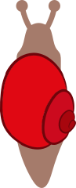

Lenken
Neige das Gerät, um die Kugel ins Ziel zu rollen

Stufe 1
Gerade
Stufe 2
Drei Salate
Stufe 3
Labyrinth
Steuerung: mit dem Finger ziehen (= neigen)
Zurück zur Tierauswahl
Zurück zum Menü
AR Kamera
0.0 s
Ziehe mit dem Finger, um zu neigen
Geschafft!